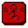
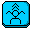
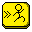

Imagina el desafío divertido de juegos como Jump King pero con la jugabilidad adictiva de un roguelite. Bienvenido a Knight's Fall, donde cada salto es una apuesta y cada caída es una lección. Controlas a un caballero que debe escalar una torre misteriosa para rescatar a la princesa. Sin embargo, la torre cambia con cada intento: plataformas, enemigos, biomas y objetos se seleccionan al azar. A medida que escalas, desbloquearás nuevas habilidades de salto que te harán sentir más poderoso. ¿Puedes romper el ciclo y llegar a la cima?
El juego se desarrolla en una torre con diferentes niveles, cada uno con su propio diseño y enemigos. El objetivo es llegar a la cima de la torre y rescatar a la princesa en menos de 3 minutos. A medida que avanzas, desbloquearás powerups que te ayudarán en tu misión. Pero tienes que poner atención, ya que la torre cambia cada vez que mueres, lo que significa que tendrás que adaptarte a nuevos desafíos y enemigos en cada intento.
Hay 3 tipos de enemigos el esqueleto, el demonio y el saltador. Cada uno tiene su propio comportamiento y habilidades. Tambien cada uno da puntuacion diferente al ser derrotado. El esqueleto es el enemigo más básico, que se mueve de un lado a otro. El demonio puede volar, mientras que el saltador tiene la capacidad de saltar cada cierto tiempo y cuando el jugador salta.
| Enemigo | Puntaje |
|---|---|
| Esqueleto | 300 |
| Demonio | 500 |
| Saltador | 400 |
Hay 3 tipos de powerups en el juego, el doble salto, el dash y el salto cargado. Cada uno tiene su propio comportamiento. El doble salto permite al jugador saltar una vez más en el aire (aunque la altura del segundo salto es menor que el primero), el dash permite al jugador moverse rápidamente en una dirección (ya este en el suelo o en el aire) y el salto cargado permite al jugador saltar más alto (cargando el salto al agacharse, y luego salta sin poder moverse mucho horizontalmente).
Estos powerups se obtienen a interactuar con su respectivo objeto en el juego, una vez desbloqueas un powerup, ya lo tienes para todas tus futuras partidas. Una vez tiens algun powrup desbloqueado, puedes usarlo en cualquier momento, pero solo puedes usar un powerup cada 3 segundos, si activas uno, no podras activar otro hasta que pasen los 3 segundos.
Por último, los powerups tambien tienen un puntaje a la hora de ser desbloqueados.
| Powerup | Puntaje |
|---|---|
| Doble salto  | 1000 |
| Salto Cargado  | 1000 |
| Dash  | 1000 |
Cuando obtienes cierta cantidad de puntaje, el jugador obtiene un speed boost, el cual aumenta la velocidad del jugador y su resistencia a morir (sube el limite de velocidad que puedes alcanzar antes de morir).
| Speed Boost Tier | Puntaje | Efecto |
|---|---|---|
| 1 | 2000 |
+10% Velocidad
+5.5% Resistencia a morir |
| 2 | 3000 |
+20% Velocidad
+11.11% Resistencia a morir |
| 3 | 4500 |
+30% Velocidad
+12.22% Resistencia a morir |
Utiliza las teclas indicadas para controlar al caballero y superar los desafíos de la torre.
| Tecla | Acción |
|---|---|
 |
Moverse a la Izquierda |
| Moverse a la Derecha | |
| Salto | |
 |
Doble Salto |
 |
Salto Cargado |
 |
Dash |
.png) |
Pausa |
 Caminar
Caminar
 Salto
Salto
 Salto Cargado
Salto Cargado
 Dash
Dash
 Pausa
Pausa